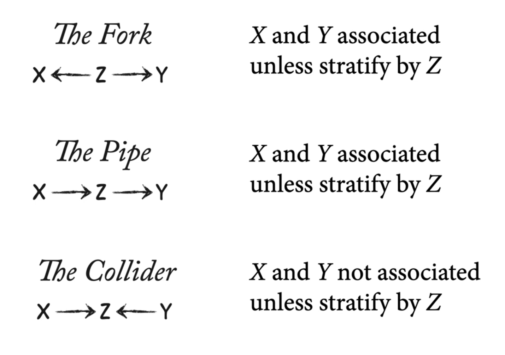
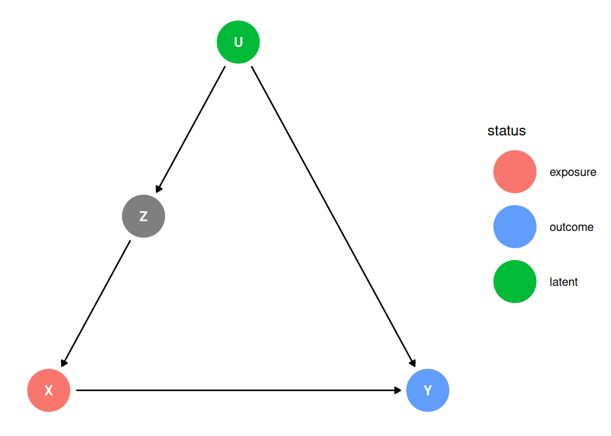
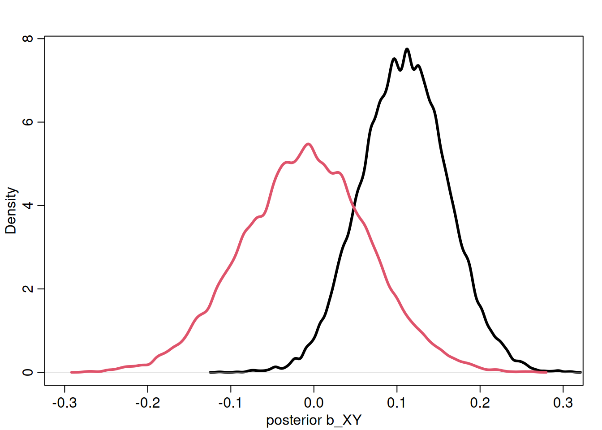
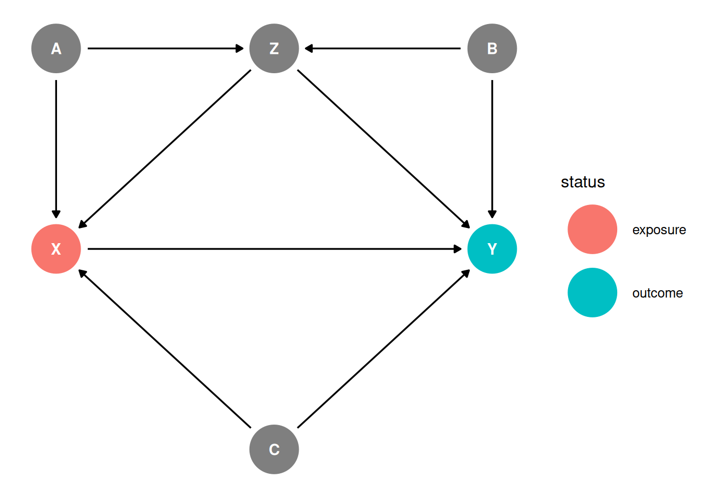
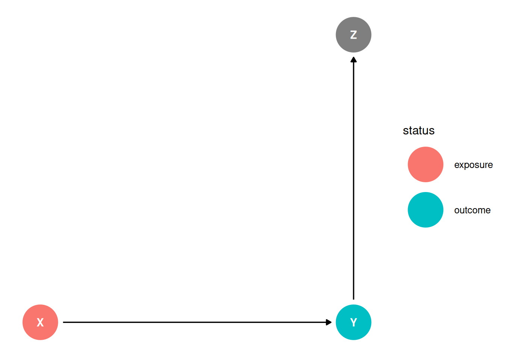
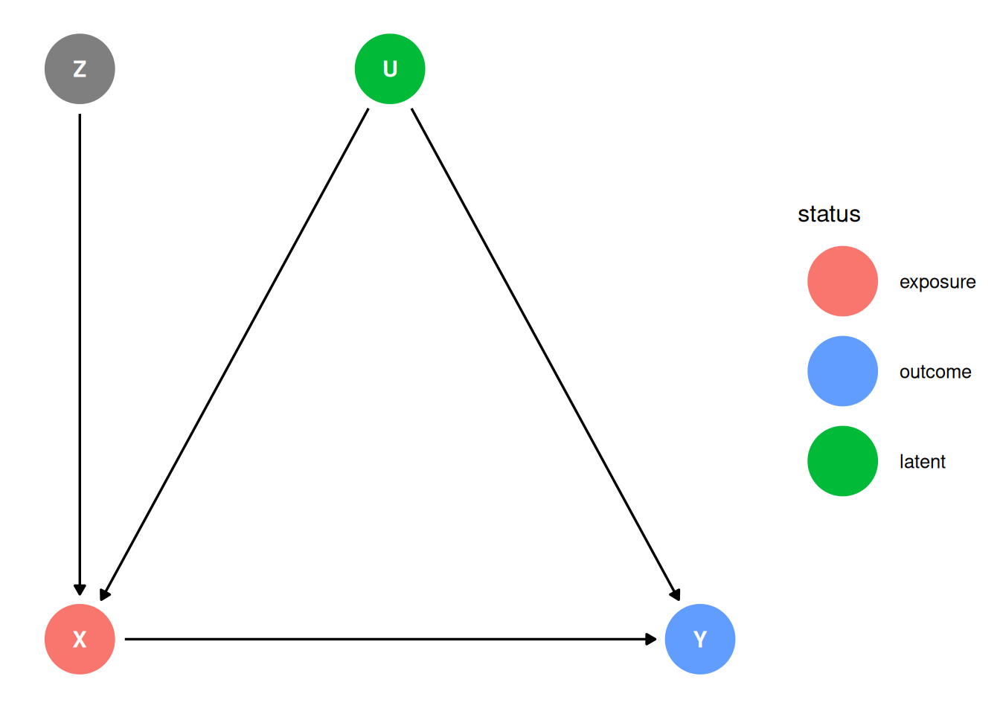

dagify(
X ~ U,
Y ~ U + X,
coords = coords
) |> ggdag(seed = 2, layout = 'auto') + theme_dag()Lecture 06 Notes
Causal Thinking
In an experiment, we remove the causes of the treatment by randomizing it
We need a statistical procedure that mimics randomization, that allows us to transform our sample into results that were as if we could have done that experiment
We communicate assumptions clearly using DAGs, and use logic to derive the implications of the causal model
Recall from L05, three common confounds and their implications for the relationships between X, Y, and Z:

Example: XYU
Removing the confound U
U is a common cause of X and Y. X and Y are associated because of their common cause U and we can remove that association by stratifying on U. Then, the remaining association after stratifying by U is the association of X and Y.
\[P(Y|do(X)) = \sum_{U}P(Y|X, U)P(U) = E_{U}(Y|X,U)\]
The distribution of Y, stratified by X and U, averaged over the distribution of U.
The causal effect of X on Y is not the coefficient relating X to Y, it is the distribution of Y when we change X, averaged over the distributions of the control variables.
Example: cheetahs, baboons and gazelles
dagify(
B ~ C,
G ~ C + B,
coords = coords
) |> ggdag(seed = 2, layout = 'auto') + theme_dag()When cheetahs are present, baboons hang out near trees and do not predate on gazelles. When cheetahs are absent, baboons predate on gazelles. The causal effect of baboons depends on the distribution of cheetahs.
do-calculus
do-calculus are the rules for finding \(P(Y | do(X))\), that justify graphical analysis of DAGs and say what is possible.
\(P(Y | do(X))\): the distribution of Y, stratified by X and U, averaged over the distribution of U
DAGs don’t make assumptions about functional relationships, they are non-parametric
DAGs allow us to justify if we need to make additional assumptions at all, without needing additional assumptions about the functional relationships.
Backdoor criterion
The backdoor criterion is the rule to find the set of variables to stratify by to yield P(Y | do(X))
- Identify all paths connecting treatment to the outcome, regardless of the direction of arrows
- Identify paths with arrows entering the treatment (backdoor). These are non-casual paths, because causal paths exit the treatment (frontdoor).
- Find adjustment sets that close all backdoor/non-causal paths.
Example: XYZU
dag <- dagify(
X ~ Z,
Y ~ U + X,
Z ~ U,
coords = coords,
exposure = 'X',
outcome = 'Y',
latent = 'U'
)
ggdag_status(dag, seed = 2, layout = 'auto') + theme_dag()
- Identify all paths connecting treatment to the outcome, regardless of the direction of arrows
X -> YX <- Z <- U -> Y
- Identify paths with arrows entering the treatment (backdoor). These are non-casual paths, because causal paths exit the treatment (frontdoor).
X -> YX <- Z <- U -> Y
- Find adjustment sets that close all backdoor/non-causal paths.
adjustmentSets(dag){ Z }Block the pipe: \(X \perp\!\!\!\perp U | Z\)
Z “knows” all of the association between X and Y that is due to U.
Expressions
\[P(Y|do(X)) = \sum_{U}P(Y|X, Z)P(Z = z)\]
\[Y_{i} \sim Normal(\mu_{i}, \sigma)\]
\[\mu_{i} = \alpha + \beta_{X} X_{i} + \beta_{Z} Z_{i}\]
Simulations
# simulate confounded Y
N <- 200
b_XY <- 0
b_UY <- -1
b_UZ <- -1
b_ZX <- 1
set.seed(10)
U <- rbern(N)
Z <- rnorm(N, b_UZ * U)
X <- rnorm(N, b_ZX * Z)
Y <- rnorm(N, b_XY * X + b_UY * U)
d <- list(Y = Y, X = X, Z = Z)
# ignore U,Z
m_YX <- quap(alist(
Y ~ dnorm(mu , sigma),
mu <- a + b_XY * X,
a ~ dnorm(0 , 1),
b_XY ~ dnorm(0 , 1),
sigma ~ dexp(1)
),
data = d)
# stratify by Z
m_YXZ <- quap(alist(
Y ~ dnorm(mu , sigma),
mu <- a + b_XY * X + b_Z * Z,
a ~ dnorm(0 , 1),
c(b_XY, b_Z) ~ dnorm(0 , 1),
sigma ~ dexp(1)
),
data = d)
post <- extract.samples(m_YX)
post2 <- extract.samples(m_YXZ)
dens(post$b_XY, lwd = 3, col = 1, xlab = "posterior b_XY", xlim = c(-0.3, 0.3))
dens(post2$b_XY, lwd = 3, col = 2, add = TRUE)
Note: the coefficient b_Z is meaningless and does not represent the causal effect of Z on Y. This model is not structured to estimate this effect and it would require a different adjustment set. Any coefficients for a variable that you add as part of the adjustment set are not usually interpretable.
precis(m_YXZ) mean sd 5.5% 94.5%
a -0.32468273 0.09122175 -0.47047270 -0.1788928
b_XY -0.01163028 0.07616178 -0.13335151 0.1100910
b_Z 0.24182415 0.11247877 0.06206135 0.4215870
sigma 1.17508483 0.05849987 1.08159075 1.2685789Example: XYZABC
dag <- dagify(
X ~ Z + A + C,
Y ~ X + B + Z + C,
Z ~ A + B,
coords = coords,
exposure = 'X',
outcome = 'Y'
)
ggdag_status(dag, seed = 2, layout = 'auto') + theme_dag()
- Identify all paths connecting treatment to the outcome, regardless of the direction of arrows
X -> YX <- C -> YX <- Z -> YX <- A -> Z <- B -> YX <- A -> Z -> YX <- Z <- B -> Y
- Identify paths with arrows entering the treatment (backdoor). These are non-casual paths, because causal paths exit the treatment (frontdoor).
X -> YX <- C -> YX <- Z -> YX <- A -> Z <- B -> YX <- A -> Z -> YX <- Z <- B -> Y
- Find adjustment sets that close all backdoor/non-causal paths.
adjustmentSets(dag){ B, C, Z }
{ A, C, Z }Example: grandparents
Estimand
What is the direct causal effect of grandparent education on child education?
Scientific model
dag <- dagify(
P ~ G + U,
C ~ G + U + P,
coords = coords,
exposure = 'G',
outcome = 'C',
latent = 'U'
)
ggdag_status(dag, seed = 2, layout = 'auto') + theme_dag()Parent education is a mediator (G -> P -> C is a pipe). Parent education is also a collider with the unobserved confound U. We cannot estimate the direct effect of of G on C but we can estimate the total effect of G on C.
Good and Bad Controls
“Control” variables are models added to an analysis so that a causal estimate is possible.
Wrong heuristics:
- Don’t include everything in the spreadsheet
- Don’t exclude variables simply because they are highly collinear. Collinearity can arise from many causal processes, we need to analyse a causal model to understand if collinearity is a problem.
- Don’t include any variables simply because they are pre-treatment measurements
Read more in Cinelli, Forney, Pearl 2021 A Crash Course in Good and Bad Controls.
Example: Bad Controls - Collider
dag <- dagify(
X ~ U,
Y ~ X + V,
Z ~ U + V,
coords = coords,
exposure = 'X',
outcome = 'Y',
latent = c('U', 'V')
)
ggdag_status(dag, seed = 2, layout = 'auto') + theme_dag()- Identify all paths connecting treatment to the outcome, regardless of the direction of arrows
X -> YX <- U -> Z <- V -> Y
- Identify paths with arrows entering the treatment (backdoor). These are non-casual paths, because causal paths exit the treatment (frontdoor).
X -> YX <- U -> Z <- V -> Y
- Find adjustment sets that close all backdoor/non-causal paths.
adjustmentSets(dag)The backdoor path is closed because Z is a collider which block the association. Z is a bad control.
Example: Bad Controls - No Backdoor
dag <- dagify(
Z ~ X + U,
Y ~ Z + U,
coords = coords,
exposure = 'X',
outcome = 'Y',
latent = 'U'
)
ggdag_status(dag, seed = 2, layout = 'auto') + theme_dag()- Identify all paths connecting treatment to the outcome, regardless of the direction of arrows
X -> YX -> Z <- u -> Y
- Identify paths with arrows entering the treatment (backdoor). These are non-casual paths, because causal paths exit the treatment (frontdoor).
X -> YX -> Z <- u -> Y
- Find adjustment sets that close all backdoor/non-causal paths.
adjustmentSets(dag)There are no backdoor paths and there is no need to control for Z. Controlling for Z biases the treatment estimate. Controlling for Z also opens a biasing path through U. We can estimate the effect of X but we cannot estimate the mediation effect of Z. Z is a posttreatment variable.
Example: Bad Controls - Case Control Bias
dag <- dagify(
Y ~ X,
Z ~ Y,
coords = coords,
exposure = 'X',
outcome = 'Y'
)
ggdag_status(dag, seed = 2, layout = 'auto') + theme_dag()
This is selection on outcome, stratifying on the outcome. It reduces the variation in the outcome that the exposure can explain. Eg. if X is education, Y is occupation and Z is income: we would reduce the influence of education because we are looking at a more limited number of occupations within each level of income.
Example: Bad Controls - Precision Parasite
dag <- dagify(
Y ~ X,
X ~ Z,
coords = coords,
exposure = 'X',
outcome = 'Y'
)
ggdag_status(dag, seed = 2, layout = 'auto') + theme_dag()There are no backdoors. There are no good reasons to condition on Z. Stratifying by Z explains away variation in X and reduces the precision of the estimate.
Example: Bad Controls - Bias Amplification
dag <- dagify(
Y ~ X + U,
X ~ Z + U,
coords = coords,
exposure = 'X',
outcome = 'Y',
latent = 'U'
)
ggdag_status(dag, seed = 2, layout = 'auto') + theme_dag()
X and Y are confounded by U. The covariation in X and Y requires variation in their causes. Within each level of Z, there is less variation in X. The confound U is more important within each Z relative to the model where it is not included.
For example, where Z is education, X is occupation, U is regional factors and Y is income.
Table 2 Fallacy
Not all coefficients represent causal effects. The statistical model designed to model the causal effect of X on Y will not also necessarily identify the causal effects of control variables.
A table including all coefficients from a model as if they are all causal effects is wrong and misleading. Some variables are included as controls, eg. to close back doors into the treatment variable.
Alternatively, present only the coefficients for causal variables, or provide an explicit interpretation of the coefficients as justified by the causal structure.
Read more in Westreich & Greenland 2013 The Table 2 Fallacy
Potential solutions: do not present control coefficients or give explicit interpretations of each.
No interpretation is possible for any coefficient without a causal model.
Example: HIV and Stroke
Estimand
What is the relationship between HIV and stroke?
Scientific model
dag <- dagify(
Y ~ X + A + S,
X ~ S + A,
S ~ A,
coords = coords,
exposure = 'X',
outcome = 'Y'
)
ggdag_status(dag, seed = 2, layout = 'auto') + theme_dag()X: HIV, Y: Stroke
Backdoor criterion
- Identify all paths connecting treatment to the outcome, regardless of the direction of arrows
X -> YX <- S -> YX <- A -> YX <- A -> S -> Y
- Identify paths with arrows entering the treatment (backdoor). These are non-casual paths, because causal paths exit the treatment (frontdoor).
X -> YX <- S -> YX <- A -> YX <- A -> S -> Y
- Find adjustment sets that close all backdoor/non-causal paths.
adjustmentSets(dag){ A, S }Statistical model
Stratify by Age and Smoking
\[Y_{i} \sim Normal(\mu_{i}, \sigma)\]
\[\mu_{i} = \alpha + \beta_{X} X_{i} + \beta_{S} S_{i} + \beta_{A} A_{i}\]
Analyse the data
What do the coefficients mean?
Conditional on A and S, \(\beta_{X}\) represents the effect of X on Y after marginalizing. \(\beta_{S}\) is confounded by A but conditional on A and X, \(\beta_{X}\) represents the direct effect of S on Y. \(\beta_{A}\) the total causal effect of A on Y through all paths but conditional on X and S, \(\beta_{A}\) represents the direct effect of A on Y.
Unobserved confounds
Taking all pairs of variables, consider if there are potential unobserved common causes for each pair.